What is version control?
- "Version control is a system that records changes to a file or set of files over time so that you can recall specific versions later. So ideally, we can place any file in the computer on version control."
- Learn more:
Why use Version Controls? You can:
- See all the changes made to your project, when the changes were made, and who made them.
- Include a message with each change to explain the reasoning behind it.
- Retrieve past versions of the entire project or of individual files.
- Create branches, where changes can be made experimentally. This feature allows several different sets of changes (for example, features or bug fixes) to be worked on at the same time, possibly by different people, without affecting the main branch. Later, you can merge the changes you want to keep back into the main branch.
- Attach a tag to a version—for example, to mark a new release.
- Synchronise changes in code, between multiple people. If two people are making changes to a file, vc can take the changes they have both made independently and merge them into a single repository.
(Source: What is version control? - Learn | Microsoft Docs)
What is Git?
Git is an open-source version control system and is the most widely used vcs in the tech industry. Git is also a distributed Version Control System. This means that it does not rely on storing all version of a project file, on a centre server. Instead, users create a clone of the repository on their local machine, which includes the full history of the project.
There are several ways we can interact with Git:
- Command Line - We can directly input commands into the command line within the relevant directory that contains our local repository (definition in next section)
- Visual Studio GUI/Visual Studio code GUIz - Both versions of visual studio can contain an Git GUI which makes executing Git commands, a lot easier. You will be interacting with this GUi in the exercises to come.
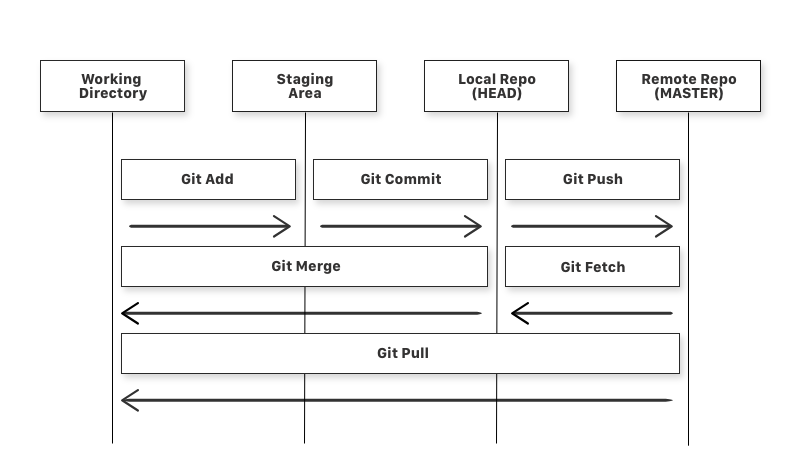
(Source: fundamentals of Git)
- Staging Area
- The files that are going to be part of your next commit
- You have made changes to the file but they have not yet been committed to the local repository. So they are held here, in the staging area
- Local Repository
- A git repository stored on your computer
- Remote Repository
- A git repository stored on a remote computer
- Working directory
- A checkout of a version of the project. A file in here can be:
- Staged: The file with the changes is marked as to be committed to the local repository but not yet committed. (Result of executing ‘git add' command)
- Modified: The file with the changes is not yet stored in the local repository
- Committed: The changes made to the file are stored in the local repository
Let's look at some of the commands mentioned in this overview, in abit more detail:
- Git add
- This command adds the file you have made changes to in your working directory, to the staging area
- Example:
git add
- Git commit
- This command takes your staged file and moves it to the local repository
- Example:
git commit -m "commit message
- ‘-m' allows you to attach a message to the commit. You can describe the changes made to the files. This is useful for you or others are looking through the history of your project.
- Git push
- This command pushes the file(s) stored in your local repository, to the remote repository
- Example:
git push origin main
- Origin is the remote repository
- Main is the specific branch
- Git fetch
- This command will fetch files from the remote repository and store them in your local directory
- However it will not store them in your working directory. For this you have to merge in the files.
- Example:
git fetch
- Git merge
- This command will get the files in your local repository e.g. the ones you have fetched from the remote repository, and bring them into your working directory
- Example:
git merge
- Git pull
- This command is a combination of git fetch and git merge
- It gets files from the remote repository and bring them into the working directory
- Example:
git pull
it is also useful to know the following:
- Branch
- A branch is a way to add to a project without affecting the main part of a project. You create a branch which allows you to develop in isolation. You may then merge the changes in your branch, into the main part of the project. But as long as your changes are in the branch, they will not affect the main project.
- Git clone
- This command allows you get a copy of an existing remote repository and create a local version of it, on your computer
- Every file and update from that branch(typically master, the main branch), is pulled into the folder you initiate git clone in
- Example:
git clone
- Git status
- This command gives us the status of the branch you are in. when you have made changes it will show how many you have made and to which files.
- Example:
git status
(Learn more about the fundamentals of Git here)
Git workflow
Version control has a general workflow that most developers use when writing code and sharing it with the team. Git has a version of this workflow using terminology and commands unique to Git.
These steps are:
- Clone/Create a repository
- Clone an existing repository from the project in DevOps.
- If required, you can Create a new repository for the project in DevOps.
- Get a local copy of code if they don't have one yet.
- Create a branch for the changes you plan to make and give it a name, such as users/jamal/fix-bug-3214 or cool-feature-x.
- Make changes to code to fix bugs or add new features.
- Commit changes to your branch. People often have multiple commits for a bug fix or feature.
- Push your branch to the remote repository.
- Once the code is ready, make it available for review by your team.
- Create a pull request so other people can review your changes. To incorporate feedback, you might need to make more commits and push more changes.
- Once the code is reviewed, merge it into the team's shared codebase.
- Complete your pull request and resolve any merge conflicts from changes other people made after you created your branch.
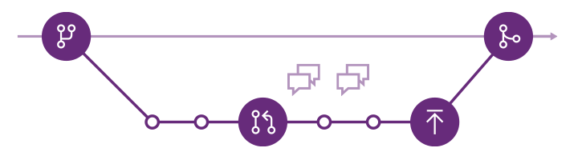
Throughout the rest of this lab tutorial you'll learn about how to use the above commands.
(Source: Azure Repos Git tutorial)
Visual Studio 2019
- Sign in Visual Studio with your account.
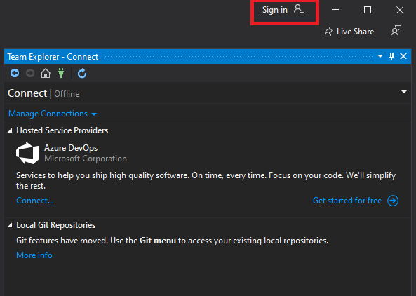
- In Team Explorer, open the Connect page by selecting the Connect button. Choose Manage Connections then Connect to Project.
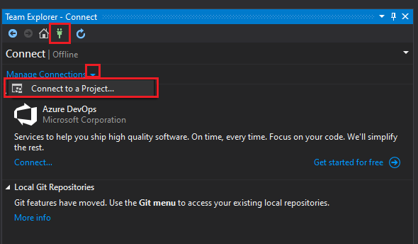
- In Connect to a Project, select the repo you want to clone from the list and select Clone. Note: I recommend creating a new folder "workspaces" on C drive to keep your code instead of the default path.
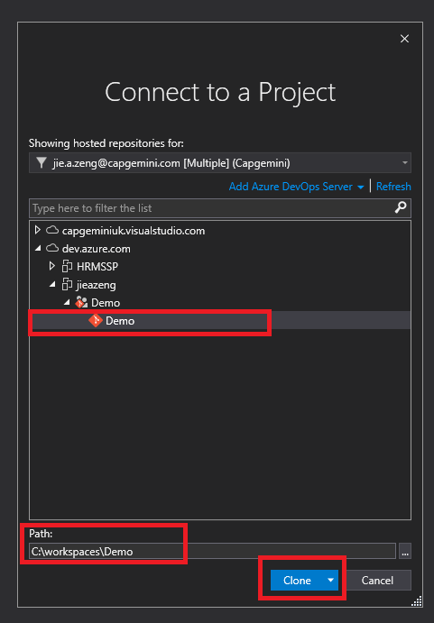
When a project is created in Azure DevOps, there is a default repository. In some cases, you may find needs for a new repository, you can simply do so via the web portal.
Create a repo using the web portal
Navigate to the Repos page in your project.
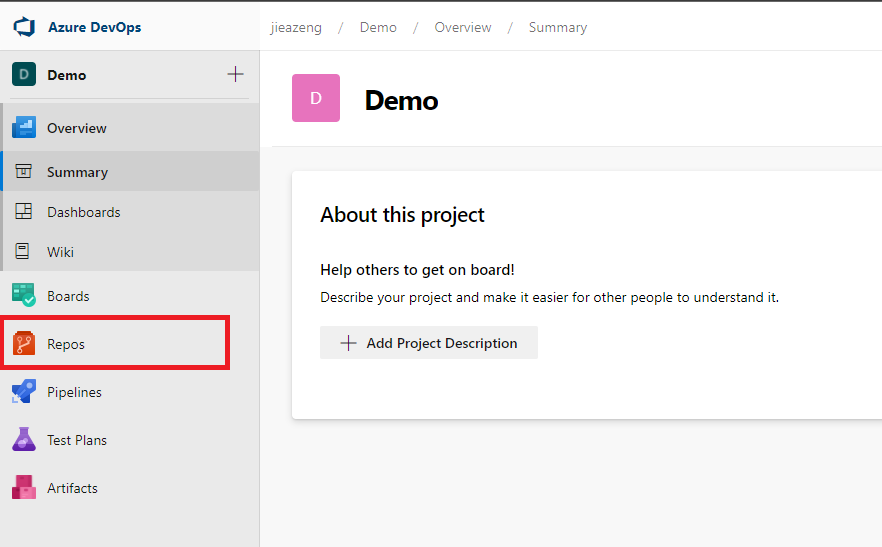
From the repo drop-down, select New repository.
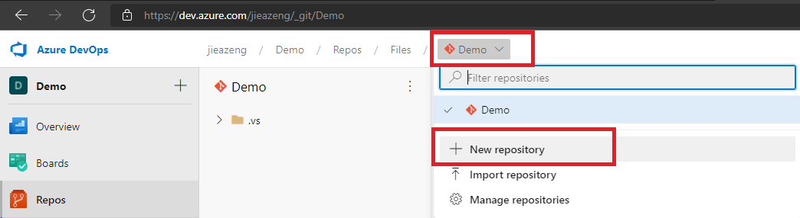
In the Create a new repository dialog, verify that Git is the repo type and enter a name for your new repo. You can also add a README and create a .gitignore for the type of code you plan to manage in the repo. A README contains information about the code in your repo. The .gitignore file tells Git which types of files to ignore, such as temporary build files from your development environment.
Set options for your new repo in the Create a Git repo dialog. When you're happy with the repo name and choices, select Create.
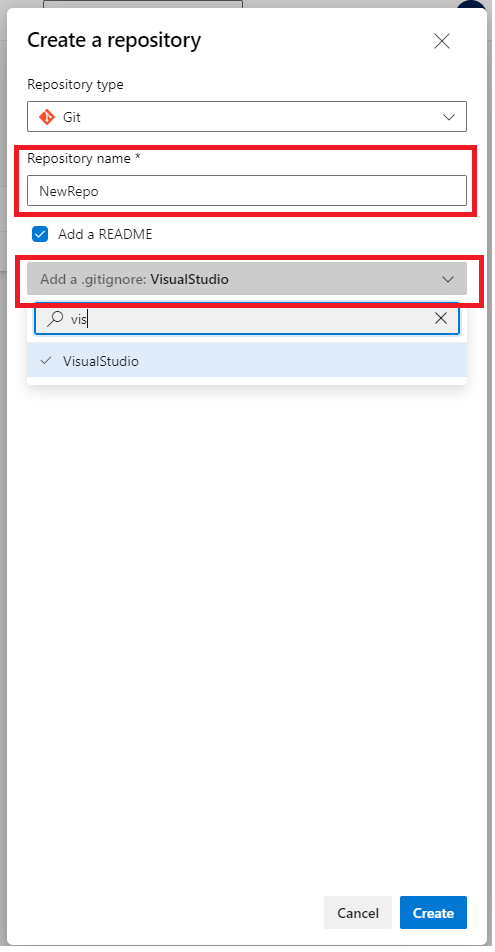
You will now have a new repository in your project.
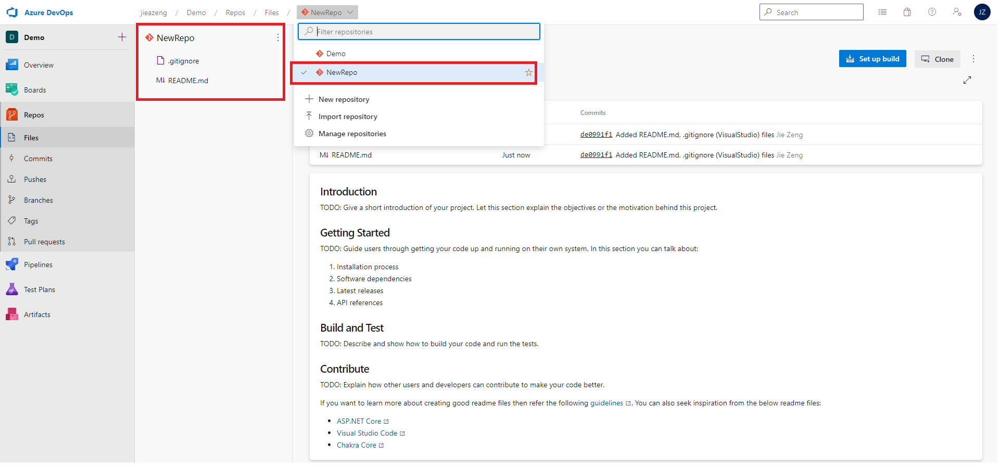
You can follow the previous step to clone this new repository to your local and start using it.
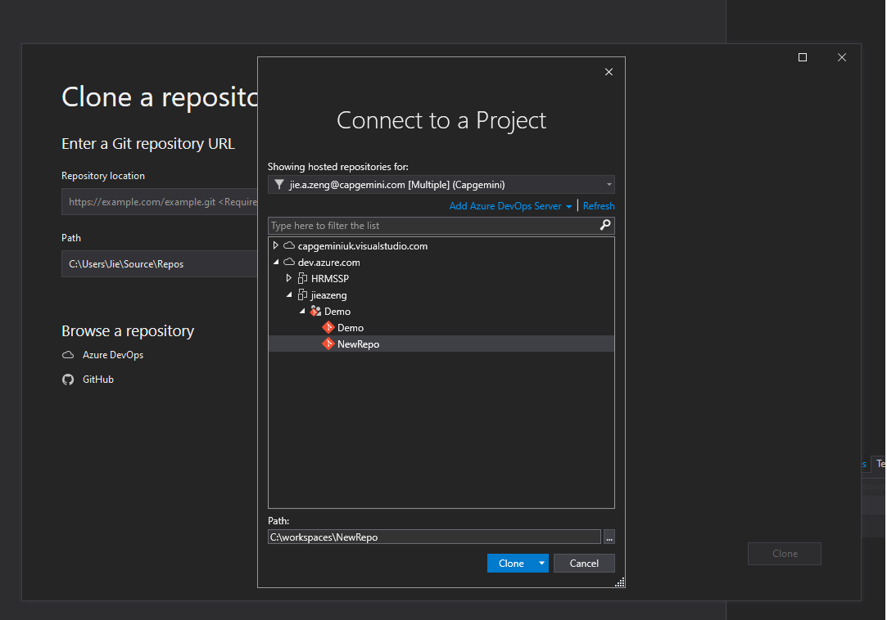
On the menu, click Git and go to Manage Branches
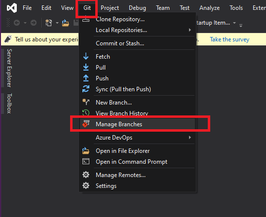
Choose the parent branch (usually main or master) to base your changes, right click and choose New Local Branch From....
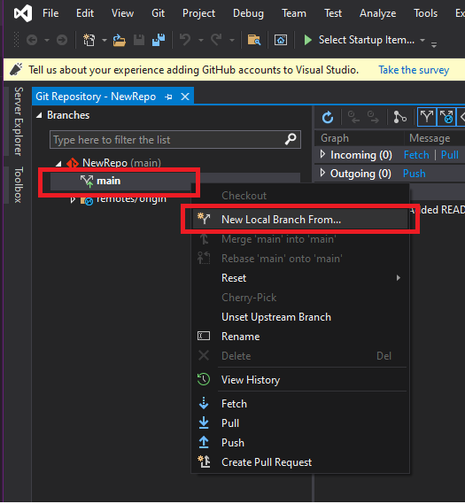
Supply a branch name in the required field and select Create Branch.
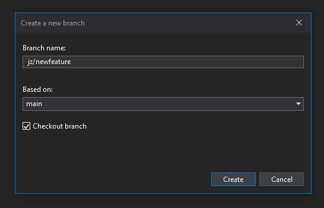
Visual Studio automatically performs a checkout to the newly created branch.
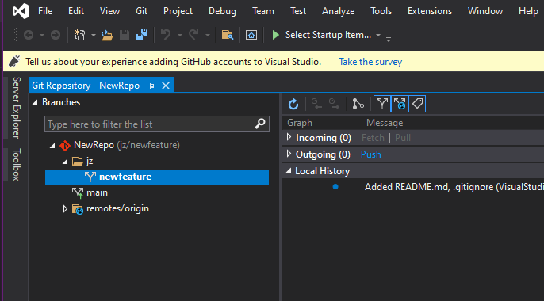
Once you have completed changes or added new files in your branch, in this case, I have created two new files "NewFile 1.txt" and "NewFile 2.txt", I would like to commit changes.
Git does not automatically add changed files to the local repository when you create a commit. You must first stage your changes to let Git know which updates you want to add to the next commit. Staging lets you to selectively add files to a commit while excluding changes made in other files.
Stage changes
- Stage individual file changes by right-clicking a file in the ‘Change' view and selecting Stage, it would create a Staged Changes section in Team Explorer. Only changes in the Staged Changes section are added to the next commit.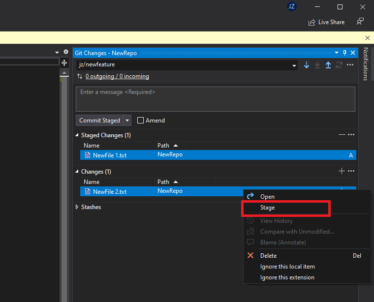
- Stage multiple files or folders by selecting them then right-clicking and choosing Stage or by dragging and dropping files from the Changes list into the Staged Changes list.
- Ignore files by right-clicking and selecting Ignore this local item or Ignore this extension.
- This adds an entry to the .gitignore file in your local repo. If the ignored file was added to your repo in an earlier commit, ignoring the file will not remove it from the Changes list.
Create a commit
- Open the Git Changes view in Team Explorer.
- Enter a commit message describing your changes and select Commit Staged to create a new commit that includes the changes listed in the Staged Changes section.
- Skip staging files if you just want to commit all changes listed by entering a commit message and selecting Commit All when you have no staged changes.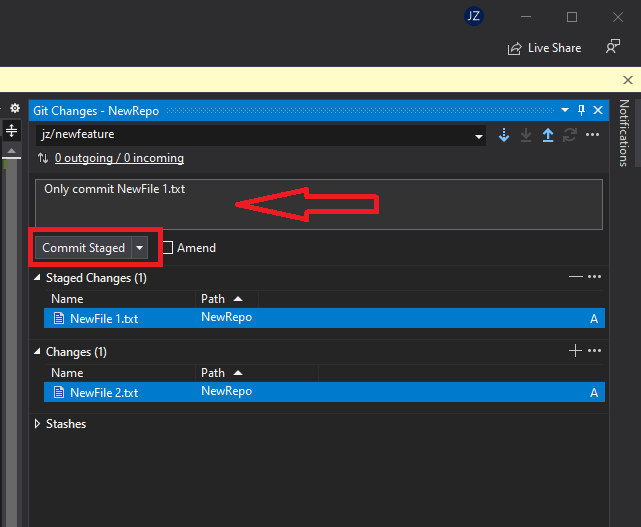
When you commit in Visual Studio you can push the commit to a remote repository.
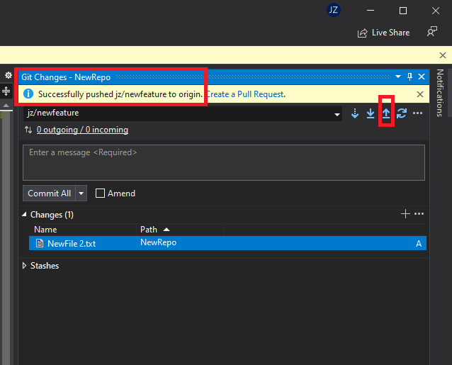
After you have pushed your first commit, the sync button becomes available, it carries out two actions, Pull and Push.
- Pull: Fetch commits from the remote branch that others have made and merges it into the local branch
- Push: Push your local commits to the remote branch
This helps keep your local branch up to date with the remote branch.
Create a new PR from the Azure DevOps project website
You can create PRs for any branch from your project's Pull requests page on the web.
- On the Repos > Pull requests page,
- select New pull request at upper right.
- OR after you push or update a feature branch, Azure Repos displays a prompt to Create a pull request.
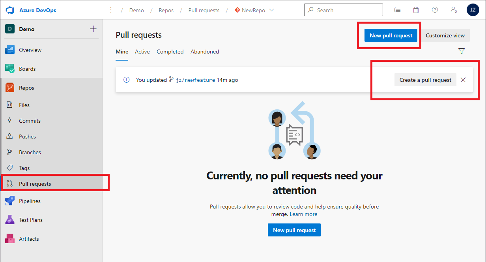
- Select the branch with the changes and the branch you want to merge the changes into, such as the main branch. Enter your PR details below and create the PR.
- Title: Overview of your changes
- Description: Details of your changes
- Reviewers: One or more reviewers.
- Work items to link: One or more user stories, tasks, tests, bugs and etc.
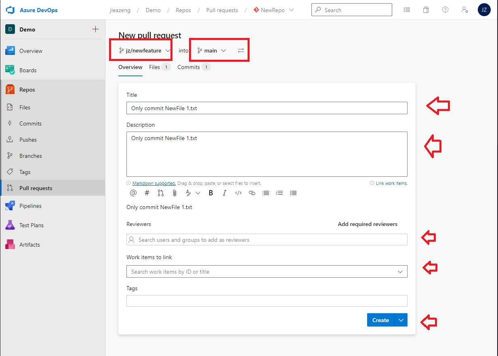
You can access PRs for any branch from your project's Pull requests page on the web.
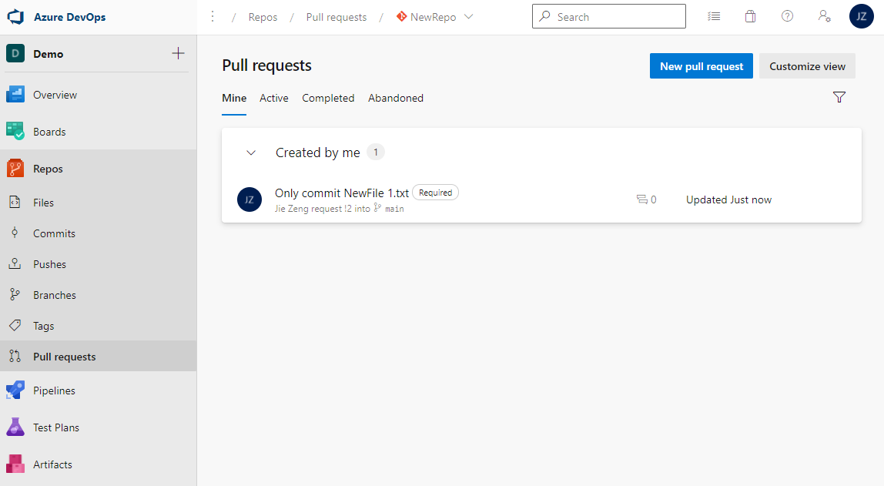
Once all required reviewers approve your pull request (PR) and the PR meets all branch policy requirements, you have two options:
- You can merge your changes into the target branch and complete the PR.
- OR if you decide not to proceed with the changes in the PR, you can abandon the PR.
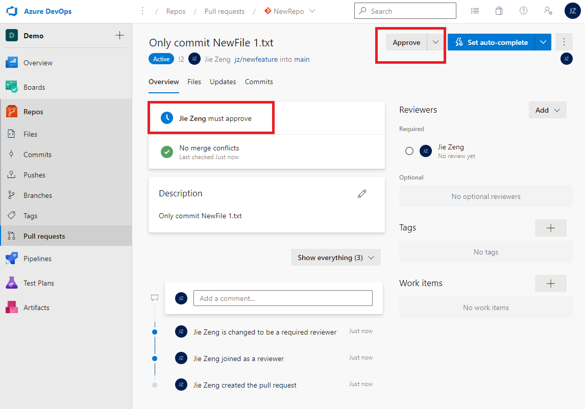
To merge your changes into the target branch, click Complete
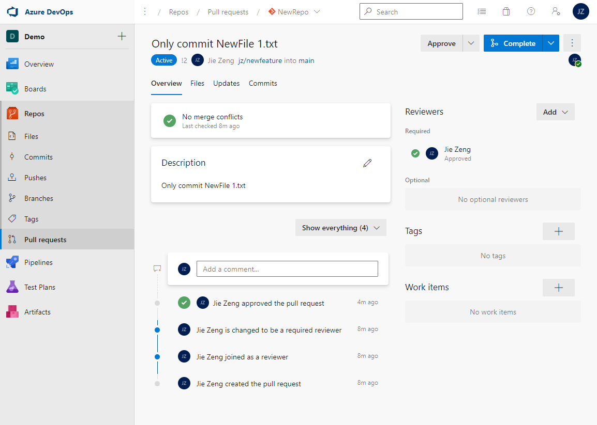
Choose Squash commit as the Merge Type and click Complete merge
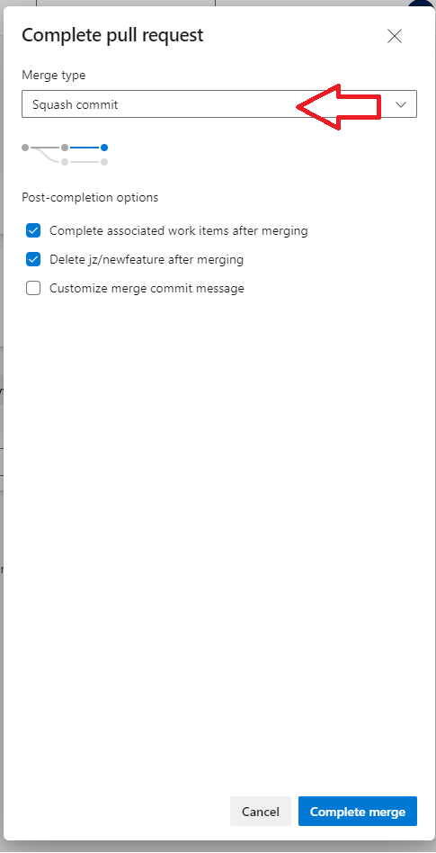
Your changes have now been merged into the target branch
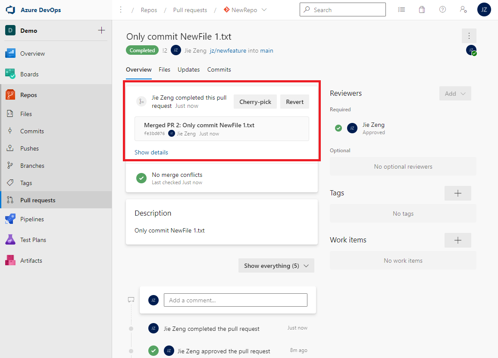